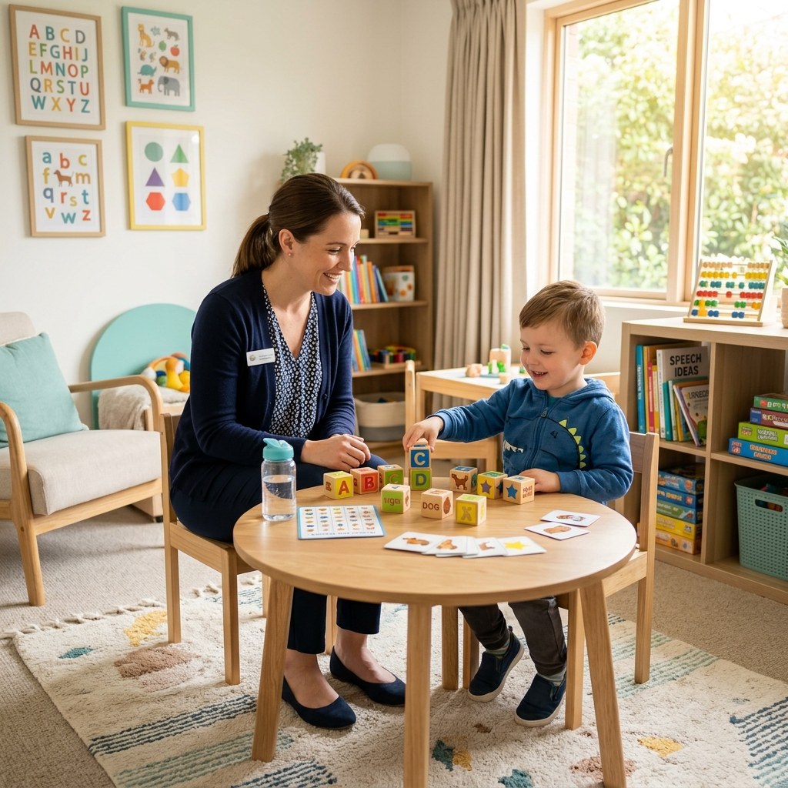
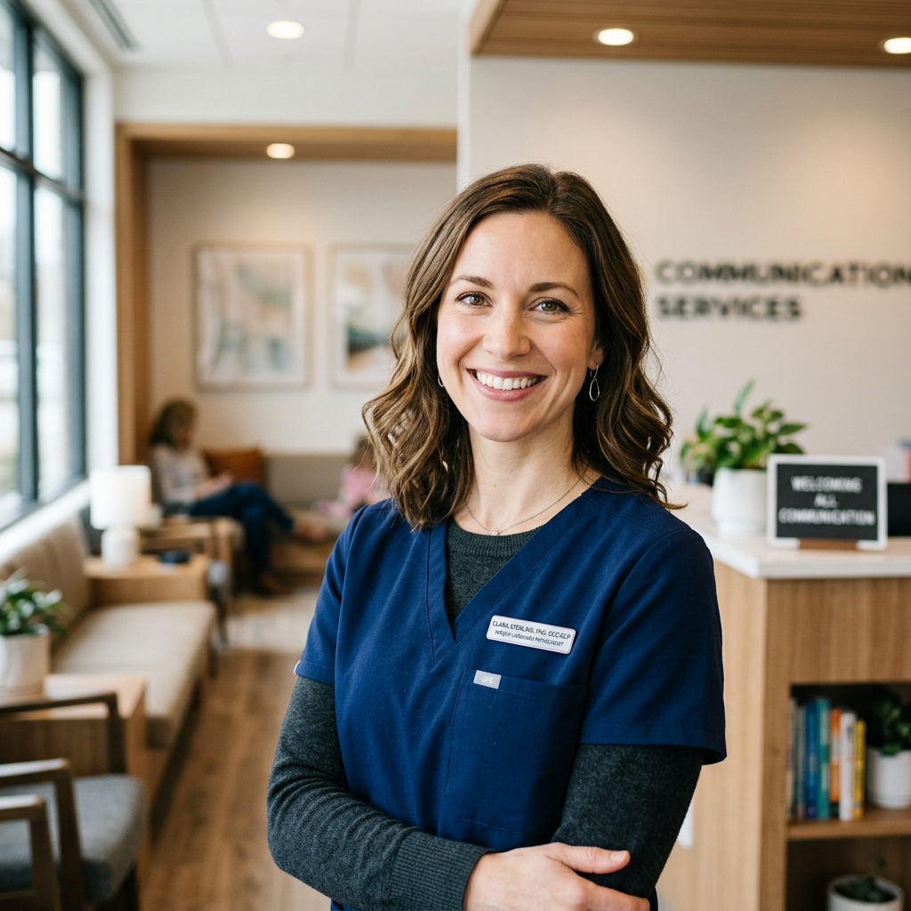

Unlock Their Voice. Speak with Confidence.
Compassionate, research-backed speech therapy tailored for children, families, and adults seeking clarity.
Every individual deserves to express themselves clearly and courageously. Through personalized support, interactive exercises, and a welcoming clinical approach, we help kids, teens, and adults build lasting communication skills.

Articulation Support
Clear, happy voices
Interactive Learning
Learning through play
Patients Empowered
Children & adults who discovered clear communication.
Years Experience
Devoted clinical practice and academic research.
Success Rate
Measured progress and positive family transformations.

Dr. Clara Sterling
Ph.D., CCC-SLP, Speech-Language Pathologist
Helping Minds Connect and Voices Flourish
I have dedicated my life to the science and art of speech-language pathology. Seeing a child speak their first clear sentence, or watching an adult regain their professional speaking confidence, makes every session incredibly rewarding.
My clinical style is highly engaging, warm, and interactive. Rather than rigid drills, I focus on evidence-based play therapy for kids and structured, functional coaching for adults, creating a comfortable environment that fosters natural growth.
Board Certified
ASHA Clinical Competence Certificate
Parent Coaching
Hanen Certified Provider
Clinical Journey & Experience
A brief snapshot of where I have had the privilege to care for clients before launching Speachy Private Practice:
Lead Pediatric Speech Pathologist
Oak Valley Pediatric Center
Clinical Director & Senior Therapist
St. Jude Medical Hospital (Speech Division)
School-Based Speech Specialist
Lakeside Integrated Academy
Tailored Therapy for Every Communication Need
We design individual pathways that combine physical play-based methods with clinical speech science to produce excellent progress.
Speech Therapy for Kids
Interactive, play-based therapy designed to spark excitement in youngsters. We address delays in words, structural vocabulary, and sentences.
Adult Speech Therapy
Focused training to rebuild vocal strength, modify pronunciation accent traits, enhance articulation, or recover after a stroke or dynamic head injury.
Language Delay Support
Helping toddler and school-aged late talkers build foundational word links, comprehend instructions, and speak with confidence.
Stuttering & Fluency Treatment
Modern scientific pacing, cognitive exercises, and respiration control mechanisms to decrease stuttering friction and manage blocks beautifully.
Autism Communication Support
Strengthening neurodiverse conversation tools, functional play, nonverbal communication, expression indicators, and peer relationships.
Online Digital Sessions
Interactive, remote teletherapy meetings that match the high results of direct clinical interaction, using dynamic digital speech tools.
Our Simple, Supportive Step-by-Step Pathway
We work closely with families and individuals so every milestone feels exciting and fully understood.
A Welcoming Initial Consultation
We start with a friendly, cost-free 15-minute phone conversation. We chat about your specific challenges, answer early questions, check whether speech-language therapy is appropriate, and discuss booking options.
Parent Tip: You don't need any referral to reach out. We are always ready to guide you immediately!
Comprehensive Diagnostic Assessment
A fun, interactive 60-minute evaluation focusing on language structure, pronunciation patterns, oral motor abilities, and voice fluency. Using both clinical tools and conversation, we build a thorough diagnostic roadmap.
Adult Tip: The evaluation is designed as an easy conversation, not an academic test. We work entirely at your comfortable pace.
Engaging & Purposeful Therapy Sessions
Weekly or bi-weekly 45-minute meetings designed around dynamic learning. For children, we employ interactive storybooks, educational games, and play models. For adults, we practice vocal exercises, communication patterns, and direct feedback.
Home Practice: We provide light, highly engaging take-home exercises to practice with your family, keeping progress moving between sessions.
Empowered Communication Graduation
We routinely measure milestones against our baseline assessment. Once target speech goals are securely met, we graduate clients to independent practice, followed by brief quarterly checkups to make sure their clarity and confidence remain strong.
Graduate Milestone: Every graduating child receives a Speachy Bravery Certificate and a special speech medal to celebrate their growth!
Stories of Confidence, Growth, and Clarity
Read the emotional reviews from parents and adults who discovered their voices at Speachy.
Answers to Common Therapy Questions
Find answers about session structures, pediatric signs, insurance options, and clinical details.
What age group is best suited for pediatric speech therapy?
Children can begin speech therapy as young as 18 months for concerns regarding delayed talking. Early milestones include responding to names, pointing, and trying simple words. For pronunciation, stuttering, and school articulation, ages 3 to 7 are ideal for intervention.
How long do individual therapy programs last?
Every individual pathway is different. Mild articulation or pronunciation concerns can often be fully resolved in 3 to 6 months. More complex delays, cognitive recovery, or stuttering management may require a supportive regular schedule of 9 to 12 months.
Do online speech sessions achieve the same success?
Yes. Clinical research shows that digital speech sessions for articulation, adult coaching, and fluency are just as successful as direct clinical visits. We use high-engagement interactive learning programs that keep children and adults fully focused.
Do you accept insurance policies or direct plans?
We provide full clinical documentation and diagnostic receipts (superbills) that you can easily submit to your insurance provider for direct out-of-network reimbursement. We also participate in select state-funded child wellness programs.
Let's Connect and Begin Their Journey
Have a question or ready to book your initial free consult? Send a message through our form, or connect directly via phone, email, or WhatsApp.
Schedule a Consultation
Fill in details below and we will get back to you within 24 hours to confirm.